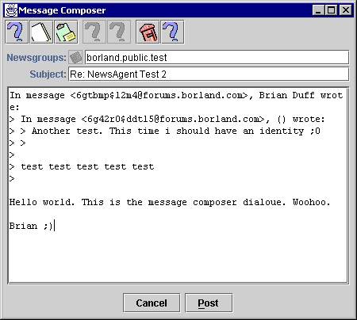

The Message Composer Dialogue |
There are two ways to display the Message Composer:

Note: some of the toolbar icons had yet to be finalised at the time of producing this documentation.
Cuts the current selection in the editor pane into the system clipboard so that it can be pasted into other applications.
Copies the current selection in the editor pane without modifying the selection, into the system clipboards so that it can be pasted into other applications.
Pastes the current contents of the system clipboard, provided they are plain text, into the editor pane at the current point of insertion, or replacing the current selection.
These items are not currently implemented.
Connects to your News Server and posts the message. If you have not configured your email address in the Identity Panel of the Preferences Dialogue, you will be asked to do so before you can post the message.
If an error occurs, this is displayed after posting.
In addition, output from any Send Agents you have installed is displayed after clicking on the Send button.
Aborts composition and closes the dialogue.
A comma separated list of all the Newsgroups you wish to post this message to. You should take care when editing this field, as your article will be rejected by the server if any of the Newsgroups are invalid or don't exist on the server.
The small icon to the left of this text field will eventually let you set this value using a dialogue box, but is currently unimplemented.
The subject of the message you are posting.
If this is an original post, the subject will be blank initially.
If this message is a reply, the subject will consist of the original subject with "Re: " prepended to it, if it doesn't already begin with those characters. It is good practice to only change this in replies if the subject has changed from the original thread. For instance, if you are replying to a message which has the subject:
Re: Swing Redraw Problems
But the subject has changed to a discussion about general AWT redraw issues, you might change the subject to:
AWT Redraw Issues [was Re: Swing Redraw Problems]
The actual contents of this field are not the primary means of threading messages in most Newsreader programs, which is why you should take care to use Messages: Reply by Posting when you want to reply to an existing article and only use Messages: Post Message if you are posting a completely new article.
This area is actually used to compose your message.
Right clicking over this pane brings up a context menu with all of the Composer's commands in it.
Next Page: Signatures Dialogue